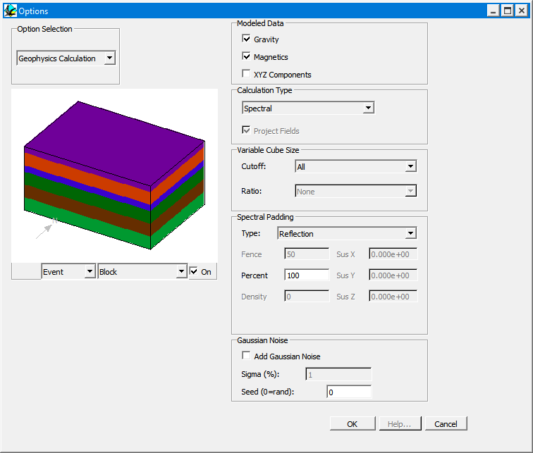
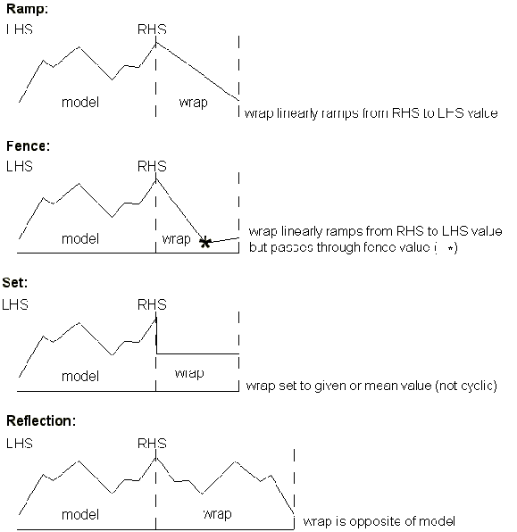

Geophysics calculation options
The Geophysics Calculation Options Window which can be selected from the Edit menu, allows the user to specify various parameters which alter the calculation scheme used for geophysical anomalies.

| GROUP | NAME | FUNCTION |
|---|---|---|
| Calculation Type | Spatial Convolution | Calculations are performed in the spatial domain, and will take longer, produce clipped profiles for simple geologies but can have less obvious edge effects |
| Spectral | Calculations are performed in the spectral domain, and will take less time, produce better profiles for simple geologies but can have more obvious edge effects | |
| Full Spatial | Calculations are performed in the spatial domain, and take into account every cube in the model, which makes the calculation very slow, but is the only really accurate means of calculating draped surveys | |
| Spatial Calculations | Calculation Range (m) | In order to limit the extent of the spatial domain calculations a Calculation Range Calculation Range needs to be defined, which serves as a horizontal cut-off distance beyond which the behaviour of the geology is ignored. This number is rounded off to whole numbers of cubes. The larger this value, the more accurate the far field calculation will be. |
| Variable Cube Size | Cutoff Level | Cutoff height above which cube size as defined by Cube Size parameter takes effect. Select All for constant cube size with depth. |
| Size Ratio | Ratio of cube size increase below cutoff level | |
| Modelled Data | XYZ | Saves X, Y & Z components of magentic field separately (as .mgx, .mgy and .mgz suffix files) |
| Spectral Padding | Type | Defines padding scheme used to fill out rock properties in area around calculated geology (See below for details) |
| Value | Fence & Set Value padding options require specific values (as %) to be entered |
Wrapping types for spectral geophysics calculations

Gaussian noiseThe Gaussian Noise group adds random variation to the density and susceptibility of every voxel. See Gaussian petrophysical noise.
DefaultsNew histories now use the Spectral calculation scheme with Reflection padding.
Noddy · open source under the MIT licence · Loop3D/noddy_qt